For this to work, you need two things:
LRC (short for LyRiCs) is a computer file format that synchronizes song lyrics with an audio file, such as MP3, Vorbis or MIDI. The LRC file format was introduced by Taiwan-based Kuo Shiang-Shiang's Lyrics Displayer. This was one of the first programs to simulate Karaoke performances. As with modern Karaoke machines, it usually displays the whole line of lyrics, though it is also possible to display words at a time. This is done by creating a time tag for each word rather than each line.
The Line Time Tags are in the format [mm:ss.xx] where mm is minutes, ss is seconds and xx is hundredths of a second. An example is in the picture below.
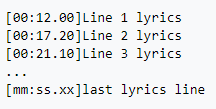
Note:
You need to have the .mp3 and .lrc files stored in a folder that you can remember. You can create a lyric file in a text editor like Notepad for Windows or TextEdit for Mac OS X. Here's how to do it:
Step 1: At the top of your LRC file, you should include the song name, artists, and album. You will need to use special codes to enter these so that the player can recognize them.
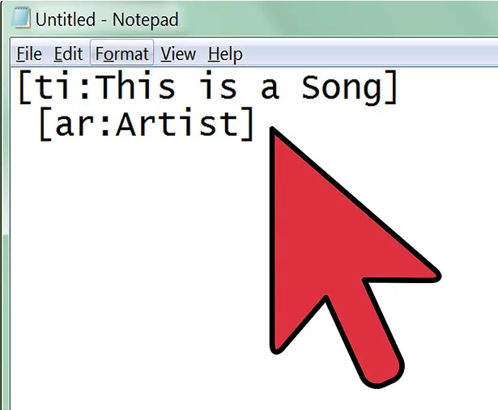
Step 2: You can either type in the lyrics yourself, or copy the text from a lyrics website. I would recommend lyricsify.com for finding the .lrc files you need.
WARNING: The website does not have a lyric file for every song.
Enter all of the lyrics into the file, with each line of lyrics on a new line in the text document.
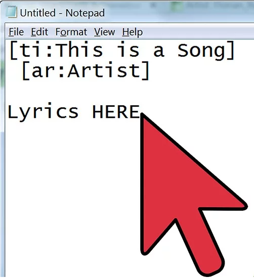
Step 3: Open the song in a media player, like Windows Media Player for Windows or Mac Media Player for Mac OS X. You will need to find the time that each lyric is sung or spoken, so you will need to open the song in a player that you can start and stop as you please. Your media player should also allow you to see the playback time in hundredths of seconds.
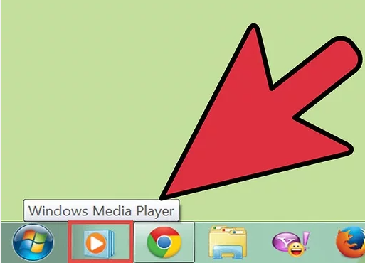
Step 4: Start adding timestamps. Play the song, and pause it each time a line of lyrics starts. Make note of the time in the player, and place your cursor at the front of the appropriate line in the LRC file.
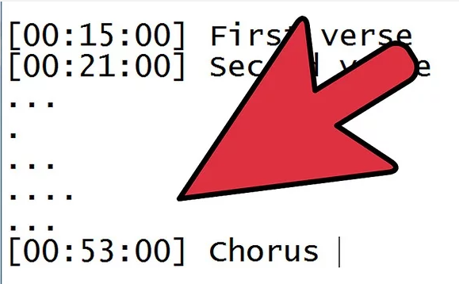
Step 5: Save the file as an LRC file. Once you have your timestamps all completed, you can save the file as an LRC file and test it out. Click File and select Save As.
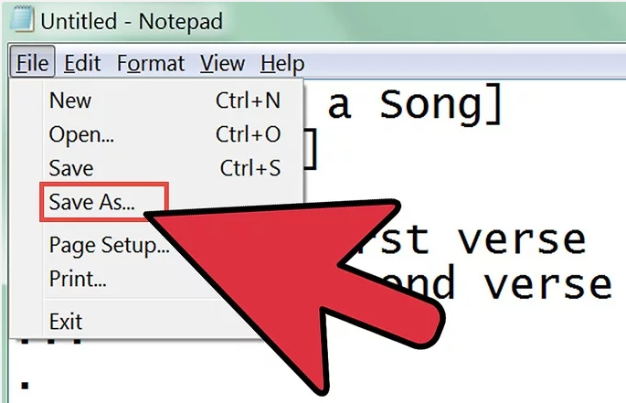
Step 6: Place the LRC file in the same location as the music file. As it was said earlier, in order for the player to load the file, it must be located in the same directory as the music file. This is true for both MP3 players and media players on your computer.
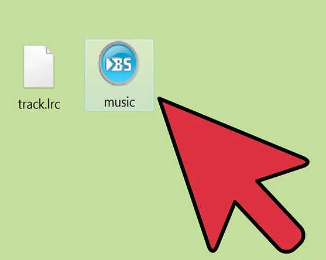
This was how to manually create LRC files. You can also use a music player plugin to create LRC files as well.
Step 1: Download and install the MiniLyrics plugin. It will assist you in synchronizing the lyrics.
Step 2: Open your favorite music player. The MiniLyrics window should show up.
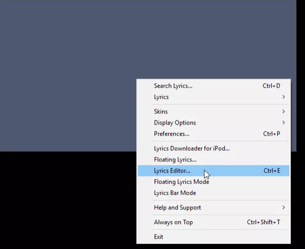
Step 3: Type or paste the lyrics of the song.
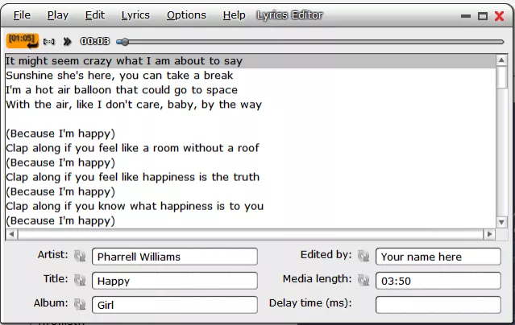
Step 4: Start playing the song.
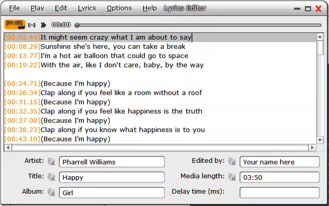
Step 5: After your lyrics are synchronized, click 'File', then 'Save as...'. Pick a location for the .lrc file and your .lrc file will be saved there.
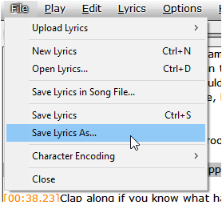